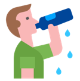
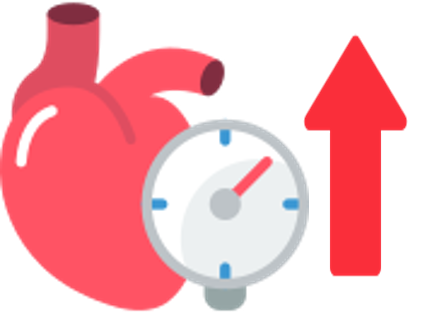
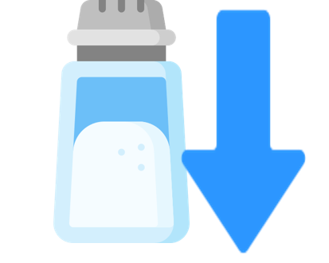

당신은 ..
짭짤핑
짜게 먹는 당신을 짭짤핑으로 임명합니다!
여러분은 달고 짠 음식 중에서도 나트륨이 다량 함유된 짠 음식을 더욱 좋아하는 짭짤핑이에요. 짠 음식을 선호하는 식습관은 다양한 대사질환에 노출될 위험이 있답니다.
어떤 문제점이 있고, 어떤 식습관으로 건강한 식생활을 만들 수 있을지 알아볼까요?
❗소금, 너무 많이 먹으면 어떻게 될까?
하루 나트륨 권장 섭취량은 2000mg!
이걸 소금으로 계산하면 딱 5.1g인데요, 이 정도가 작은 찻숟가락 하나 정도라는 사실, 알고 계셨나요?
그런데 이걸 훌쩍 넘어서 소금을 과하게 먹으면 몸에 어떤 일이 벌어질까요?
먼저, 나트륨이 많아지면 우리 몸은 “목마르다!”를 외치며 물을 더 끌어들입니다. 이렇게 체내 수분이 늘어나면서 혈압도 덩달아 올라가죠. 결과적으로 고혈압은 여러 문제를 부릅니다.
1. 심혈관계 질환 
혈압이 높으면 혈관도 고생입니다. 계속 높은 압력을 받다 보니 혈관 벽이 손상되고 딱딱하게 굳어지기 쉽습니다. 그러면 혈액이 원활히 흐르지 못하고, 심장에도 과부하가 걸리게 되죠. 이로 인해 심장이 점점 비대해지고 기능이 떨어질 수 있어요.
2. 신장 질환 
우리 몸의 신장은 혈액을 깨끗하게 걸러주는 필터 역할을 하는데요, 혈압이 높아지면 신장으로 가는 혈액량도 많아져 신장에 큰 부담이 갑니다. 그러다 보면 필터 기능이 점점 약해지면서 신장 질환으로 이어질 수 있죠.
3. 골다공증
나트륨은 체내 칼슘을 끌고 밖으로 나가버리는 특성이 있어요. 칼슘이 부족해지면 우리 몸은 뼈 속 칼슘까지 빼내게 되는데요, 이런 일이 반복되면 뼈가 약해지고, 골다공증의 위험까지 커질 수 있습니다.
그러니까 소금을 적당히 먹는 건 건강을 위해 정말 중요하겠죠? 오늘부터 소금 섭취량, 꼭 체크해 보세요!
🥄 나트륨 줄이기! 실천 가능한 꿀팁
짜게 먹는 습관, 고치기 어렵다고요? 걱정 마세요. 나트륨 섭취를 자연스럽게 줄이면서도 맛있고 건강하게 먹는 법, 알려드릴게요! 식품을 구매할 때, 조리할 때, 섭취할 때를 기준으로 차근차근 설명해드릴테니 꼭 실천해보도록 해요:)
[구매할 때]
1. 가공식품, 뒷면의 '나트륨 함량' 꼭 확인하기 
우리가 먹는 나트륨의 대부분은 가공식품에서 온다는 사실, 알고 계셨나요?
햄, 소시지, 라면 같은 가공식품을 고를 땐, 나트륨 함량이 낮은 제품을 선택하세요.
작은 습관이 큰 변화를 만듭니다!
[조리할 때]
2. 짠맛 대신 감칠맛과 신맛을 활용하여 요리하기 
“소금을 덜 넣으면 싱겁지 않나요?” 걱정되신다면 감칠맛이나 신맛을 활용해보세요!
양파, 마늘, 표고버섯, 다시마, 발사믹 식초와 같은 재료는 소금 없이도 음식의 풍미를 살려줍니다.
짠맛을 줄이고 감칠맛이나 신맛을 더하면, 나트륨은 낮추고 맛은 UP!
3. 저나트륨 조리법으로 맛있게 요리해요 
우선 저염간장, 저염된장 등 염분이 적은 양념을 사용해보세요. 그리고, 국이나 찌개는 다 끓인 후 제일 마지막에 간을 맞추는 것을 추천합니다.
음식이 뜨거울 때는 덜 짜게 느껴지기 때문에 소금을 더 넣게 될 수 있으니 주의하세요.
4. 조리 시 조림보다는 구이를 활용해요 
조림은 음식에 간장, 설탕, 소금 같은 양념을 넣고 졸이는 방식이에요. 조림의 형태로 음식을 섭취하게 되면, 양념이 음식에 깊게 배어들면서 나트륨과 당분 섭취량이 증가할 수 있습니다.
특히, 국물을 많이 졸일수록 양념이 더 농축되어 나트륨 함량이 높아지게 됩니다.
반면, 구이는 양념 사용을 최소화하거나 따로 곁들일 수 있어 나트륨과 당분 섭취를 줄이는 데 유리해요.
5. 김장을 할 때는 액젓의 사용을 줄이거나, 저염 김치를 사용해요
김장할 때 사용되는 액젓은 김치의 감칠맛을 더해주지만, 동시에 나트륨 함량이 높습니다.
액젓의 사용을 줄이는 대신, 무채, 쪽파 등의 양념 속을 풍부하게 넣어 김치의 풍미를 살려보세요.
자극적이지 않고 깔끔하며, 언제 먹어도 아삭하고 시원한 식감까지 느낄 수 있어요.
만약 김장을 하지 않는다면, 저염김치를 섭취하는 것이 나트륨 저감화를 위해 가장 좋겠죠?
[섭취할 때]
6. 식사 시에 채소를 함께 먹기
염분이 많은 음식으로 식사를 할 때에는 채소와 함께 곁들여서 드세요.
채소에 많이 들어있는 칼륨은 몸에 쌓인 나트륨을 배출해 주고, 체내 균형을 맞추는 데 도움을 준답니다.
식사를 할 때 채소를 함께 먹는 습관, 맛도 좋고 건강에도 딱!
7. 국과 찌개는 국물은 적게, 건더기 위주로 먹어요 
국과 찌개의 국물에는 간을 맞추기 위해 많은 양의 소금이나 간장, 된장 등이 사용되며, 이는 나트륨 함량이 높아지는 주된 원인이에요.
국물 자체를 많이 섭취하면 나트륨 섭취량이 크게 증가해 건강에 부담이 될 수 있답니다.
이렇게 간단한 팁들만 실천해도 나트륨 섭취를 건강하게 줄일 수 있어요. 소금 대신 건강한 맛! 오늘부터 실천해볼까요?